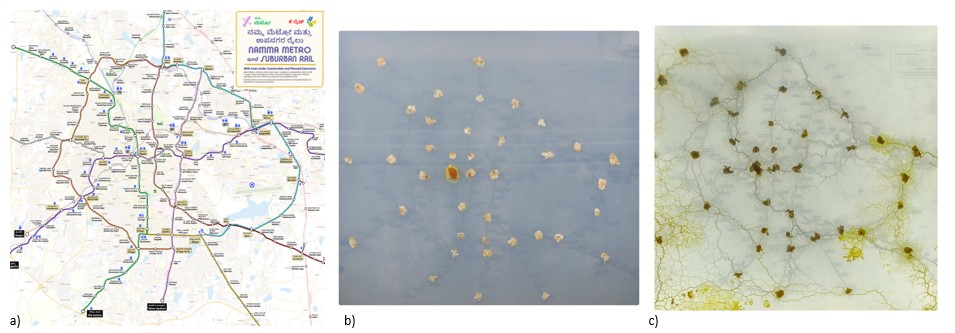

About Me
Hello there,
I'm Litralson Eluvathingal (he/him), the first of his name, and I rather not discuss its meaning.
I graduated from the Indian Institute of Science (IISc), Bengaluru with a Bachelor's and Master's in Biology (BS-MS),
which is a research-oriented interdisciplinary program. During this period, my research focus was on cell biology, exploring how organelle morphology
changes in different physiological conditions and how receptor protein distribution affects signalling dynamics, with the help of super-resolution
microscopy. I'm currently interested in emergent properties in
biological systems like pattern formation (Reaction-Diffusion systems), collective behaviour, and cellular intelligence.
As a natural extension of my interest in emergent properties in biological systems, I’m also fascinated by the bottom-up approach to
designing systems where the individual interacting components are designed and their interactions give rise to properties
of the system. I do realise the inherent limitation of these systems of optimising for local conditions
but they are fascinating nonetheless. The transition from local to global optimisation in these systems is something
that I would like to explore further. In my free time, I enjoy reading books and photographing life around me (mostly insects and occasionally humans).
I also appreciate well-thought-out designs, whether in information design, architecture, institutional structure,
or consumer products.
Projects
- Slime Mold (Physarum polycephalum): Emergent Networks for Urban Planning
Keywords: Physics of Life, Physarum polycephalum, Emergent Properties, & Urban Planning.
Through this project, I tried to replicate the work of A. Tero et al 2010 where showed the networks formed by slime molds are similar in efficiency, cost, and fault tolerance to that of the Tokyo rail network. Here I wanted to see how slime mold optimises the connections between the proposed Namma Metro and Suburban stations in Bengaluru. This was developed with TIFR-ICTS for the Sci560 exhibition season at Science Gallery Bengaluru (SGB). - Autophagy: Simulating the Autophagosome Biogenesis
Keywords: Biophysics, Autophagy, & Molecular Dynamics Simulations.
We worked on large-scale molecular dynamics simulations of phagophore membranes with embedded LC3 proteins that aimed to improve our understanding of macroautophagy. This process helps to remove waste materials from cells. Through this project, we tried to decipher the curvature-generating effects of LC3 proteins on Endoplasmic reticulum membranes. The LC3 protein being investigated here gets embedded in the membrane after it gets conjugated with phosphatidylethanolamine (PE) residue. The LC3 protein-PE complex can be thought of as a lipid with a huge head group and the clustering of them could potentially result in the altering of the curvature of the membrane due to steric effects.
BUMPy Phagophore Builder: A modified version of BUMPy Python package by Kevin J. Boyd for generating custom phagophore membane shapes. - Notch Signalling Dynamics: Protein NanoDomains on Membranes
Keywords: Monte Carlo Simulations, Cell Blender, M Cell, Reaction Diffusion Systems, Cell Biology, & Super-resolution Microscopy.
I used Super-Resolution Microscopy (STORM) to map out the Notch-1 distribution on a cell membrane and quantified its properties. Then we simulated the Notch-1 distribution on a cell membrane using a reaction-diffusion model and analysed how that affected the signalling dynamics. - Mitochondrial Dynamics: Nanoscale Mapping of Mitochondrial Topography in Heterologous Cell Lines
Keywords: SRRF, Super-resolution Microscopy, Mitochondrial fission and fusion, Image processing, & CRISPRi
Quantifying mitochondrial volume in Neuro-2a cells using Super-resolution microscopy (SRRF) and 3-D rendering at different levels of expression of SIRT3. At different expression levels of SIRT3, we observed differences in the distribution of the amount of punctate, intermediate, and filamentous mitochondria. This project involved designing primers, plasmid cloning, CRISPRi, plasmid transfection, immunocytochemistry, and image processing. - Lysosome Biogenesis: Investigating the Role of Golgi Apparatus
Keywords:Lysosome biogenesis, SRRF (Super-Resolution Radial Fluctuations), Structured Illumination Microscopy,
Keratinocytes, Image processing, & 3D Rendering
Through this project, we investigated the role of the Golgi apparatus in the maturation of specialised lysosomes in differentiated keratinocytes. I was involved in image acquisition and 3D rendering of organelles to observe whether there was any contact between these organelles and later to see the extent of these contacts. This involved using microscopy techniques like SRRF (Super Resolution and Radial Fluctuations) and SIM (Structured Illumination Microscopy).
Mahanty, S., Bergam, P., Belapurkar, V., Eluvathingal, L., Gupta, N., Goud, B., ... & Setty, S. R. G. (2024). Biogenesis of specialised lysosomes in differentiated keratinocytes relies on close apposition with the Golgi apparatus. Cell Death & Disease, 15(7), 496.
DOI: https://doi.org/10.1038/s41419-024-06710-w

Slime Mold - Bengaluru Map Experiment: a) The reference map used for placing the oats. This map was originally prepared by Captain Naveen Chandra, Praja RAAG. b) After placing the oats at various Metro and Suburban Railway Stations, the slime mold was inoculated at the Nadaprabhu Kempegowda/Majestic Metro Station. c) The slime mold network after growing for ~ 6 days.

SGB Mediator Training:The talk given at SGB about the Bengaluru Map Experiment to the Mediators. Photo Credits: Disha Kuzhively